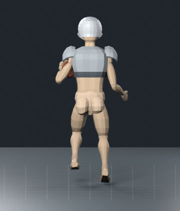
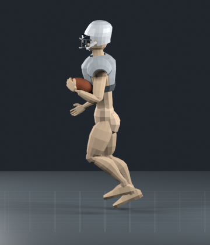
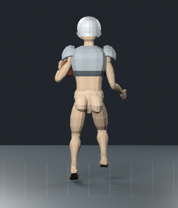
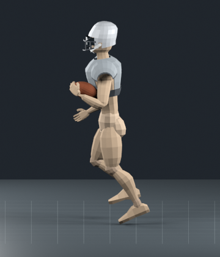

In-place clips played over the 0.5-second runtime juke. Wide base, deep braking plant, low lateral transfer and forward push. Left: Foot.R plant → Foot.L landing and drive. Right reverses the footwork. Bone names follow the existing rig.



